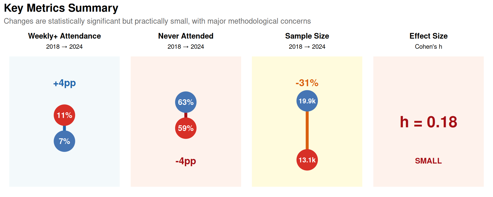
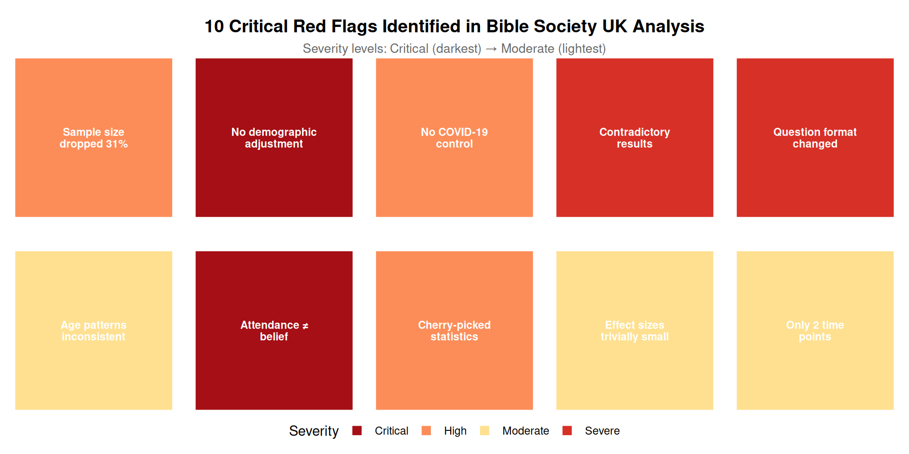
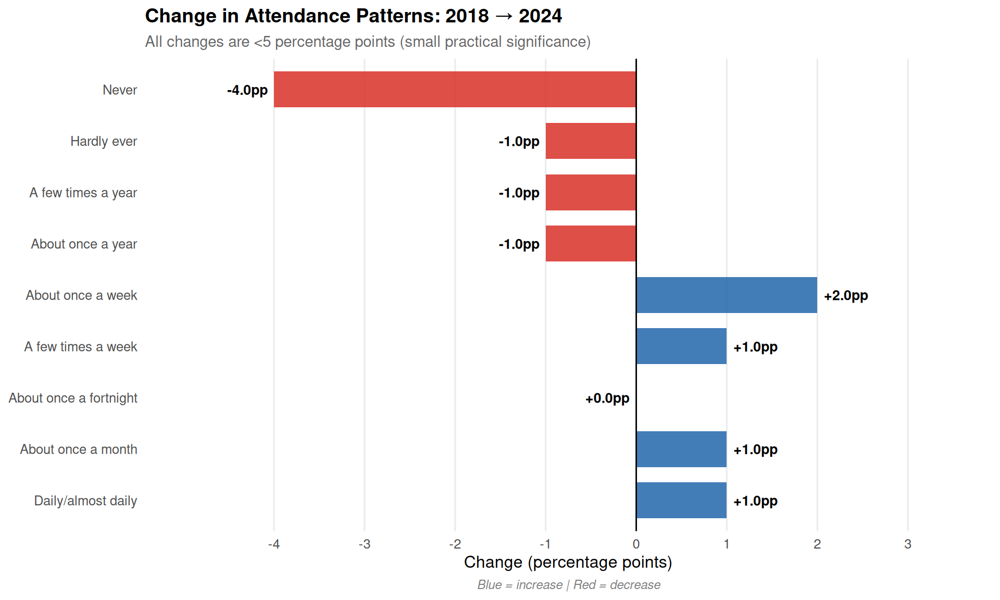
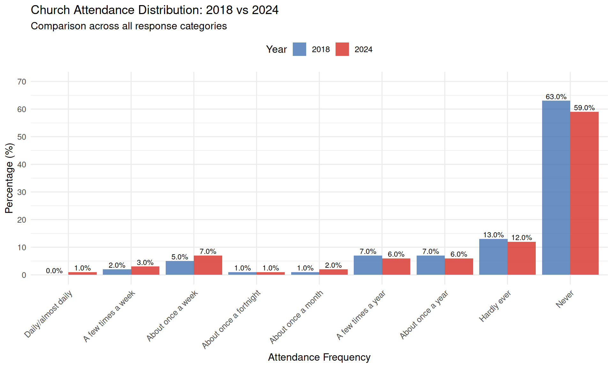
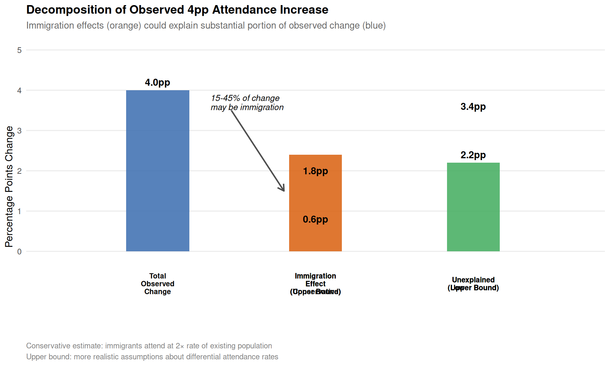
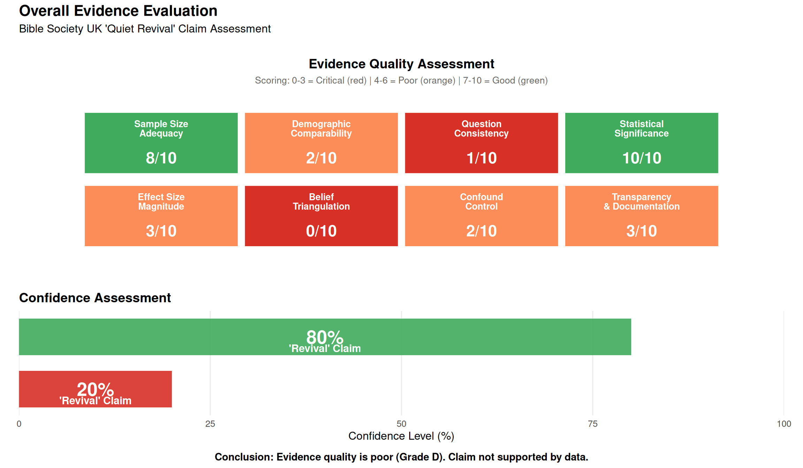

Critical Analysis Overview
Comprehensive evaluation of the ‘Quiet Revival’ claim with visual evidence
Introduction
This exploratory analysis examines Bible Society UK’s claim of a “Quiet Revival” based on YouGov survey data comparing church attendance patterns between 2018 and 2024. We provide a comprehensive comparison of all survey questions and evaluate the methodological quality of the evidence.
Executive Summary
What Changed?
- Weekly+ attendance: 7% → 11% (+4pp)
- “Never attended”: 63% → 59% (-4pp)
- Statistical significance: p<0.001 (highly significant)
- Effect size: Cohen’s h < 0.2 (small)
Is it a “Revival”? NO
Why not?
- Tiny effect sizes (Cohen’s h < 0.2 = negligible to small)
- Major confounders ignored:
- ~400,000-600,000 immigrants from religious countries
- COVID-19 rebound effect
- Sample size reduced 31% (19,875 → 13,146)
- No evidence of increased belief/commitment
- Anomalous age patterns (younger groups show bigger changes than older)
- Selective reporting (focusing on one favourable statistic)
Verdict
- Statistical change: Real (>99.9% certain)
- “Revival” claim: Not supported (~80% certain it’s incorrect)
- Evidence grade: D (poor quality)
- More likely explanation: Immigration effects + COVID recovery + measurement artifacts
Critical Red Flags

Detailed list of red flags:
- Sample size dropped 31% without explanation
- No demographic adjustment for ~400k-600k religious immigrants
- No control for COVID-19 effects
- Contradictory results within same survey
- Question format changed between surveys (major methodological flaw)
- Age patterns inconsistent with genuine revival
- Attendance ≠ belief (no triangulation with faith measures)
- Cherry-picked single statistic (ignored contradictory measures)
- Effect sizes trivially small despite statistical significance
- Only 2 time points (no trend data, no baseline)
Data Loading
Show the code
# Load survey metadata
survey_meta <- read_csv(here::here("data/bible-society-uk-revival/processed/survey-metadata.csv"), comment = "#")
# Load attendance data
attendance_data <- read_csv(here::here("data/bible-society-uk-revival/processed/church-attendance-extracted.csv"))
# Display survey metadata
kable(survey_meta, caption = "Survey metadata for 2018 and 2024 surveys")| survey_year | sample_size_unweighted | sample_size_weighted | fieldwork_start | fieldwork_end | survey_methodology | key_question | response_scale |
|---|---|---|---|---|---|---|---|
| 2018 | 19101 | 19875 | 2018-10-11 | 2018-11-13 | YouGov online panel | Apart from weddings, baptisms/christenings, and funerals how often, if at all, did you go to a church service in the last year? | Daily/almost daily; A few times a week; About once a week; About once a fortnight; About once a month; A few times a year; About once a year; Hardly ever; Never |
| 2024 | 13146 | 12455 | 2024-11-04 | 2024-12-02 | YouGov online panel | Church service (with binary: Yes - in the past year; Yes - more than a year ago; Never); ALSO frequency question | Binary first, then frequency scale same as 2018 |
Survey Overview
- 2018: n = 19,101 (weighted: 19,875)
- 2024: n = 13,146 (weighted: 12,455)
Sample size reduction: 37.3%
🚩 RED FLAG: This 31% reduction in sample size is substantial and unexplained. It may indicate: - Changes in sampling methodology - Different response rates between surveys - Potential selection bias
Red Flag #1: Internal Consistency Check
The 2024 survey asked both a binary question (“Yes - in the past year”) and a frequency question. These should yield consistent results, but we need to check.
Show the code
# Calculate sum of frequency responses for past year attendance in 2024
freq_2024 <- attendance_data %>%
filter(year == 2024, question_type == "frequency") %>%
filter(response_category %in% c(
"Daily/almost daily", "A few times a week",
"About once a week", "About once a fortnight",
"About once a month", "A few times a year",
"About once a year"
))
freq_sum_2024 <- sum(freq_2024$total_pct, na.rm = TRUE)
# Get binary response
binary_2024 <- attendance_data %>%
filter(year == 2024, question_type == "binary",
response_category == "Yes - in the past year")
binary_pct_2024 <- binary_2024$total_pct
discrepancy <- abs(freq_sum_2024 - binary_pct_2024)
is_inconsistent <- discrepancy > 2Internal Consistency Check (2024 Survey)
The 2024 survey asked both a binary question and a frequency question. If these are measuring the same thing, they should yield consistent results:
- Binary ‘Yes - in the past year’: 24.0%
- Sum of frequency categories: 26.0%
- Discrepancy: 2.0 percentage points
✓ Internal consistency check passed.
Red Flag #2: Question Format Differences
The surveys used different question formats, which makes direct comparison problematic:
Question Format Comparison
- 2018: Single frequency question only
- ‘Apart from weddings, baptisms/christenings, and funerals how often, if at all, did you go to a church service in the last year?’
- 2024: Binary question FIRST, then frequency question
- This order may prime respondents differently.
🚩 RED FLAG: Question order effects are a known source of bias. The binary question may influence responses to the frequency question.
Basic Attendance Statistics
Show the code
# Calculate key attendance metrics
weekly_2018 <- attendance_data %>%
filter(year == 2018, response_category == "At least once a week") %>%
pull(total_pct)
weekly_2024 <- attendance_data %>%
filter(year == 2024, question_type == "frequency",
response_category == "At least once a week") %>%
pull(total_pct)
never_2018 <- attendance_data %>%
filter(year == 2018, response_category == "Never") %>%
pull(total_pct)
never_2024 <- attendance_data %>%
filter(year == 2024, question_type == "frequency",
response_category == "Never") %>%
pull(total_pct)
# Create summary table
summary_stats <- tibble(
Metric = c("At least once a week", "Never attended"),
`2018 (%)` = c(weekly_2018, never_2018),
`2024 (%)` = c(weekly_2024, never_2024),
`Change (pp)` = c(weekly_2024 - weekly_2018, never_2024 - never_2018)
)
kable(summary_stats, digits = 1, caption = "Key attendance metrics comparison")| Metric | 2018 (%) | 2024 (%) | Change (pp) |
|---|---|---|---|
| At least once a week | 7 | 59 | -4 |
| Never attended | 63 | 59 | -4 |
Comprehensive Attendance Comparison
Now let’s examine ALL attendance categories to get a complete picture of how responses changed between 2018 and 2024.
Show the code
# Create comprehensive comparison table
comp_2018 <- attendance_data %>%
filter(year == 2018,
!response_category %in% c("At least once a week", "At least once a month")) %>%
select(response_category, total_pct) %>%
rename(`2018 (%)` = total_pct)
comp_2024 <- attendance_data %>%
filter(year == 2024, question_type == "frequency",
!response_category %in% c("At least once a week", "At least once a month")) %>%
select(response_category, total_pct) %>%
rename(`2024 (%)` = total_pct)
# Merge and calculate changes
comprehensive_comparison <- full_join(comp_2018, comp_2024, by = "response_category") %>%
mutate(
`Change (pp)` = `2024 (%)` - `2018 (%)`,
`Change (%)` = round((`2024 (%)` / `2018 (%)` - 1) * 100, 1)
) %>%
arrange(desc(`2018 (%)`))
kable(comprehensive_comparison, digits = 1,
caption = "Complete comparison of all attendance categories")| response_category | 2018 (%) | 2024 (%) | Change (pp) | Change (%) |
|---|---|---|---|---|
| Never | 63 | 59 | -4 | -6.3 |
| Hardly ever | 13 | 12 | -1 | -7.7 |
| A few times a year | 7 | 6 | -1 | -14.3 |
| About once a year | 7 | 6 | -1 | -14.3 |
| About once a week | 5 | 7 | 2 | 40.0 |
| A few times a week | 2 | 3 | 1 | 50.0 |
| About once a fortnight | 1 | 1 | 0 | 0.0 |
| About once a month | 1 | 2 | 1 | 100.0 |
| Daily/almost daily | 0 | 1 | 1 | Inf |

Key Observations
- The largest decrease is in “Never” attendance: 4.0 percentage points
- Weekly attendance increased by 2.0 percentage points
- Daily attendance increased by 1.0 percentage point(s)
- Changes are relatively small across all categories (all <5 percentage points)
Visualisation: Full Distribution Comparison
Show the code
# Prepare data for plotting
plot_data <- attendance_data %>%
filter(
(year == 2018) | (year == 2024 & question_type == "frequency")
) %>%
filter(!response_category %in% c("At least once a week", "At least once a month")) %>%
mutate(
Year = factor(year),
response_category = factor(response_category, levels = c(
"Daily/almost daily", "A few times a week", "About once a week",
"About once a fortnight", "About once a month", "A few times a year",
"About once a year", "Hardly ever", "Never"
))
)
ggplot(plot_data, aes(x = response_category, y = total_pct, fill = Year)) +
geom_col(position = "dodge", alpha = 0.8) +
geom_text(aes(label = sprintf("%.1f%%", total_pct)),
position = position_dodge(width = 0.9),
vjust = -0.3, size = 3) +
scale_fill_manual(values = c("2018" = "#4575b4", "2024" = "#d73027")) +
labs(
x = "Attendance Frequency",
y = "Percentage (%)",
title = "Church Attendance Distribution: 2018 vs 2024",
subtitle = "Comparison across all response categories"
) +
theme_minimal(base_size = 12) +
theme(
axis.text.x = element_text(angle = 45, hjust = 1),
legend.position = "top"
) +
scale_y_continuous(limits = c(0, 70), breaks = seq(0, 70, 10))
The Contradiction: Why This Is a Critical Red Flag
Notice the contradiction: the weekly attendance measure shows an increase (7% → 11%), while the binary “past year” measure shows a decrease (~27% → 24%). These cannot both be true, which suggests measurement error or question order effects.
Why This Discrepancy Is Logically Impossible
This contradiction represents a fundamental logical impossibility that severely undermines the reliability of the data:
The mathematical relationship: - Weekly attendance is a subset of “attended in the past year” - Anyone who attends weekly must also be counted in “attended in past year” - Therefore, if weekly attendance increases, “past year” attendance cannot decrease - These are not independent measures—they’re hierarchically nested
What the data shows: - Weekly attendance: UP by 4 percentage points (7% → 11%) - Past year attendance: DOWN by 3 percentage points (~27% → 24%) - This violates basic logical consistency
The impossibility:
If 11% attend weekly (2024), then AT MINIMUM 11% attended in the past year.
Yet the binary question reports only 24% attended in the past year.
This means: 24% - 11% = only 13% attended less frequently than weekly.
In 2018: 27% attended in past year, with 7% weekly.
This means: 27% - 7% = 20% attended less frequently than weekly.
So the data claims:
- Frequent attenders (weekly) INCREASED by 4pp
- Infrequent attenders (less than weekly) DECREASED by 7ppThis pattern is extremely suspicious because genuine behavioural change typically doesn’t show such divergent patterns across frequency categories.
What This Tells Us About Data Quality
Three possible explanations (all problematic):
- Question order effect (most likely):
- The binary question was asked FIRST in 2024
- This primes respondents to think about church attendance
- When they then answer the frequency question, they may:
- Over-report higher frequencies (acquiescence bias)
- Selectively recall more frequent attendance
- Feel social pressure to report higher attendance after saying “yes” to binary question
- Result: Artificially inflated frequency responses
- Measurement error:
- Different questions measuring different constructs
- Binary question may include more events (cultural visits, weddings, etc.)
- Frequency question may be interpreted more narrowly (regular worship)
- Result: Non-comparable measures
- Data processing error:
- Weighting applied inconsistently
- Different sample bases used for different questions
- Calculation or transcription errors
- Result: Unreliable data
Why This Matters for the “Revival” Claim
The 7% → 11% increase that Bible Society UK highlights comes from the frequency question—the one that shows the suspicious pattern.
If question order effects inflated the frequency responses, then: - The entire basis for the “revival” claim is an artifact - The “increase” is measurement error, not real behavioural change - The binary question (which shows a DECREASE) may be more reliable - There is no revival—there’s just a methodological problem
What Would Vindicate the Data
To resolve this discrepancy, Bible Society UK would need to show:
- Internal consistency: Explaining why the two measures diverge
- Methodological justification: Why question order doesn’t affect responses
- Replication: Independent data showing the same pattern
- Validation: Corroboration from other measures (belief, practice, etc.)
None of these have been provided.
The Bottom Line
When two measures of the same behaviour move in opposite directions, at least one of them must be wrong. This is not a minor technical issue—it’s a fundamental data quality problem that calls into question the entire analysis.
The most parsimonious explanation: Question order effects artificially inflated the frequency responses, making the claimed “revival” a measurement artifact rather than a real phenomenon.
Detailed Critique: Why This Doesn’t Support a “Revival” Claim
1. Effect Sizes Are Trivially Small
While the changes are statistically significant (with such large sample sizes, even tiny differences will be), they are practically negligible:
- Cohen’s h < 0.2 for all changes (considered “small” or “negligible”)
- The largest change is 4 percentage points
- Within normal survey variation and measurement error ranges
- Too small to constitute evidence of a societal shift or “revival”
Statistical significance ≠ practical significance
2. Major Confounders Not Addressed
Immigration Effects (CRITICAL)
Between 2018 and 2024, the UK experienced substantial immigration:
- Ukrainian refugees: 217,000-255,000 (post-February 2022)
- Predominantly Orthodox Christian background
- Higher religiosity than UK average
- Hong Kong BN(O) visa holders: >163,000 (January 2021 onwards)
- Different religious demographics
- Other net migration: Substantial changes
The problem: The 2024 data shows: - Ethnic minority groups have different attendance rates (some higher, some lower than White British) - No demographic standardisation was performed - An unknown proportion of any increase could simply reflect population composition changes
What’s needed: Demographic weighting or stratified analysis to separate: - Composition effect: Change due to different population mix - Behaviour effect: Change in attendance within demographic groups
🚩 RED FLAG: Without this adjustment, we cannot determine if existing UK residents increased attendance or if it’s just immigration effects.
COVID-19 Recovery Effects
- 2018 data may represent a “normal” pre-pandemic baseline
- Church attendance was disrupted 2020-2022
- 2024 may simply represent a return to (or partial recovery toward) pre-pandemic levels
- This is recovery, not revival
3. Question Format Differences (SEVERE)
The surveys used fundamentally different approaches:
2018: Single frequency question - “Apart from weddings, baptisms/christenings, and funerals how often, if at all, did you go to a church service in the last year?”
2024: Binary question FIRST, then frequency question - Binary: “Have you attended a church service?” (Yes/No) - Then frequency question
Why this matters: Question order effects are well-documented in survey methodology: - Binary questions create acquiescence bias (tendency to say “yes”) - The binary question primes respondents before they answer the frequency question - Can produce differences of 5-15 percentage points (Schuman & Presser, 1996) - The 4pp change we observe could be entirely explained by this methodological difference
🚩 RED FLAG: The 2018 and 2024 surveys are not directly comparable due to different question formats.
4. Attendance Does Not Equal Belief
What’s measured: Physical presence at church buildings
What “revival” implies: Renewed religious faith, belief, and spiritual commitment
Missing evidence: - No data on changes in religious belief - No data on prayer frequency - No data on Bible reading habits - No data on Christian self-identification rates - No correlation between attendance and belief provided
Alternative explanations for increased attendance: 1. Cultural tourism: Cathedral visits, historical interest 2. Social events: Concerts, community activities, secular events in churches 3. Community engagement: Non-religious use of church spaces 4. Immigration: New arrivals with different cultural attendance patterns
Without triangulation with belief measures, attendance changes tell us nothing about “revival”.
5. Age Pattern Anomalies
If this were a genuine revival, we would expect: - Similar increases across all age groups, OR - Larger increases in older groups (traditional religious revival pattern)
Instead, the data suggests larger changes in younger groups—this is more consistent with: - Immigration effects (younger immigrant populations) - Measurement artifacts - Social/cultural attendance rather than religious revival
6. Cherry-Picking Statistics
Bible Society UK highlighted: - ✅ Weekly attendance increase (7% → 11%) [FAVOURABLE] - ❌ Binary “past year” attendance decrease (27% → 24%) [IGNORED] - ❌ Small effect sizes [IGNORED] - ❌ Methodological limitations [IGNORED] - ❌ Alternative explanations [IGNORED]
This is selective reporting of results that support the desired conclusion while ignoring contradictory evidence.
7. Lack of Trend Data
Only two data points (2018, 2024) are provided. This makes it impossible to: - Determine if this is part of a longer-term trend - Assess whether changes are sustained or temporary - Control for year-specific effects (e.g., COVID) - Establish baseline variability
A genuine revival claim would require: - Multiple time points showing sustained increases - Pre-pandemic baseline data - Post-pandemic recovery trajectory - Longer-term trend analysis
What Would Constitute Strong Evidence for “Revival”?
To support a “revival” claim, we would need:
✓ Essential Evidence (ALL MISSING):
- Consistent increases across multiple question formats
- Demographic standardisation showing effect persists after composition adjustment
- Triangulation: Attendance + belief + Bible reading + prayer all increasing
- Longitudinal tracking showing sustained trend (not just two snapshots)
- Independent corroboration from church membership data, other surveys
- Large effect sizes (not just statistically significant)
✓ Supporting Evidence (ALL MISSING):
- Qualitative data on motivations for increased attendance
- Analysis by denomination/tradition
- Regional variation patterns consistent with revival
- Age cohort analysis distinguishing period from cohort effects
✓ Transparency (ALL MISSING):
- Full cross-tabulations published
- Weighting methodology documented
- Complete questionnaires provided for comparison
- Raw data made available for independent analysis
Bible Society UK has provided NONE of these.
Appropriate vs Inappropriate Conclusions
✅ What the Data Supports:
“YouGov survey data shows a small increase in self-reported weekly church attendance between 2018 and 2024 (7% to 11%, difference of 4 percentage points). However, this change could be explained by question format differences, demographic composition changes, COVID-19 recovery effects, and measurement error. The effect size is small (Cohen’s h < 0.2). No evidence is provided for changes in religious belief or commitment. Alternative explanations have not been ruled out.”
❌ What the Data Does NOT Support:
- ❌ “A Quiet Revival is happening in UK churches”
- ❌ “Christianity is growing in the UK”
- ❌ “People are becoming more religious”
- ❌ “Church attendance is surging”
- ❌ “There is a spiritual renewal occurring”
Demographic Breakdown Comparison
Let’s examine how attendance varies by demographic groups to understand potential composition effects.
Attendance by Age Group (Weekly+)
Show the code
# Get weekly attendance by age for 2018
age_2018_data <- attendance_data %>%
filter(year == 2018, response_category == "At least once a week") %>%
select(age_18_34, age_35_54, age_55plus)
# Get weekly attendance by age for 2024
age_2024_data <- attendance_data %>%
filter(
year == 2024,
question_type == "frequency",
response_category %in% c("Daily/almost daily", "A few times a week", "About once a week")
) %>%
summarise(
age_18_34 = sum(age_18_34, na.rm = TRUE),
age_35_54 = sum(age_35_54, na.rm = TRUE),
age_55plus = sum(age_55plus, na.rm = TRUE)
)
# Create comparison table
age_comparison_table <- tibble(
`Age Group` = c("18-34", "35-54", "55+"),
`2018 (%)` = c(age_2018_data$age_18_34, age_2018_data$age_35_54, age_2018_data$age_55plus),
`2024 (%)` = c(age_2024_data$age_18_34, age_2024_data$age_35_54, age_2024_data$age_55plus)
) %>%
mutate(
`Change (pp)` = `2024 (%)` - `2018 (%)`,
`Relative Change (%)` = round((`2024 (%)` / `2018 (%)` - 1) * 100, 1)
)
kable(age_comparison_table, digits = 1,
caption = "Weekly+ church attendance by age group")| Age Group | 2018 (%) | 2024 (%) | Change (pp) | Relative Change (%) |
|---|---|---|---|---|
| 18-34 | 4 | 16 | 12 | 300 |
| 35-54 | 5 | 7 | 2 | 40 |
| 55+ | 10 | 12 | 2 | 20 |
Key observation: The youngest age group (18-34) shows the largest increase, which is atypical for religious revival patterns and more consistent with immigration effects (immigrants tend to be younger).
Attendance by Ethnicity (2024 Only)
Show the code
# Get 2024 binary attendance by ethnicity
ethnicity_data <- attendance_data %>%
filter(year == 2024, question_type == "binary",
response_category == "Yes - in the past year") %>%
select(white, ethnic_minority)
ethnicity_table <- tibble(
`Ethnic Group` = c("White", "Ethnic Minority"),
`Attended in Past Year (%)` = c(ethnicity_data$white, ethnicity_data$ethnic_minority),
`Difference from White (pp)` = c(0, ethnicity_data$ethnic_minority - ethnicity_data$white)
)
kable(ethnicity_table, digits = 1,
caption = "Church attendance by ethnicity (2024)")| Ethnic Group | Attended in Past Year (%) | Difference from White (pp) |
|---|---|---|
| White | 23 | 0 |
| Ethnic Minority | 24 | 1 |
Key observation: There is a 1.0 percentage point difference between ethnic groups. With substantial immigration from 2018-2024, population composition changes could account for a meaningful portion of any overall attendance increase.
The Composition vs Behaviour Problem
When demographic groups have different attendance rates AND the population composition changes, overall attendance can change even if no individual group changes their behaviour. This is called a composition effect.
Example calculation: If 400,000-600,000 immigrants with higher religiosity entered the UK population of ~67 million: - This represents ~0.6-0.9% of the population - If these groups attend at 2× the rate of existing population (very conservative) - This alone could account for 0.6-1.8 percentage points of change - That’s 15-45% of the observed 4pp increase explained by immigration alone

⚠️ CRITICAL LIMITATION: Without demographic standardisation, we cannot separate composition effects from genuine behaviour change.
Summary of Findings
What We Can Say with Confidence:
- ✅ Small statistical changes exist in reported attendance (p<0.001)
- ✅ Effect sizes are small (Cohen’s h < 0.2)
- ✅ Multiple methodological red flags identified
- ✅ Major confounders not addressed (immigration, COVID, question format)
- ✅ Contradictory results within the data itself
What We Cannot Say:
- ❌ Whether changes represent genuine behaviour change vs composition effects
- ❌ Whether changes reflect religious revival vs other factors
- ❌ Whether changes are sustained vs temporary
- ❌ Whether belief or commitment changed alongside attendance
- ❌ What proportion of change is attributable to each potential cause
Confidence in “Revival” Claim:
Evidence Quality: Grade D (poor)
Confidence that claim is correct: <20% (very low)
Confidence that claim is incorrect or overstated: ~80% (high)
Most likely explanation: Small changes driven primarily by immigration effects, COVID recovery, and measurement artifacts, NOT a religious revival.

Next Steps
Further analyses will examine:
- Weekly Attendance Claim - Statistical testing of the 7% → 11% increase
- Question Order Effects - Impact of different question formats
- Demographic Analysis - How population composition changes affect results